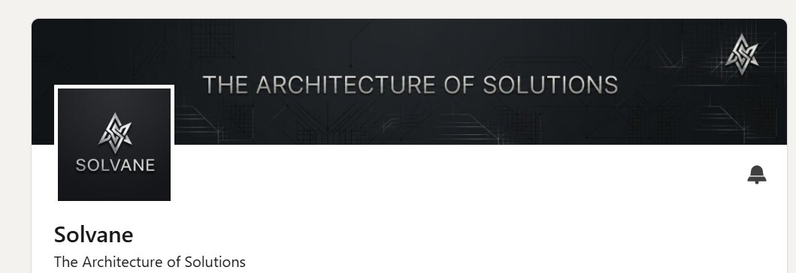

Solvane is an independent digital solutions company engineered for execution excellence. It removes architectural complexity for modern enterprises — the kind that slows teams down long before it shows up on a roadmap.

Solvane on LinkedIn
What it builds
Production-grade infrastructure, high-throughput data pipelines and custom artificial-intelligence layers, delivered as working systems rather than proposals.
Standard
Built on mathematical precision and uncompromising standards: the robust financial and technical backbone that lets digital capability scale seamlessly.
Direction
Long-term potential to grow into a hardware company.